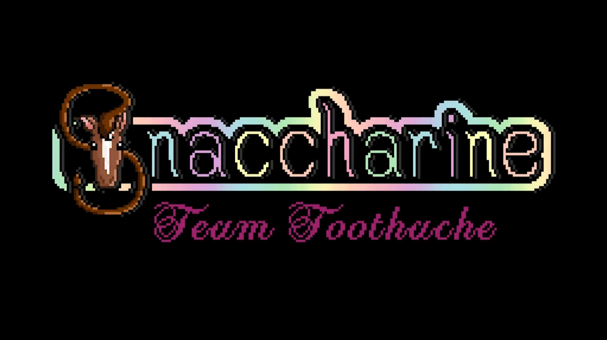

Snaccharine

Overview
Snaccharine is a game developed collaboratively as part of the Game Design program at Michigan State University. The project brought together a cross-disciplinary team to build a polished, complete game experience within a semester-length development cycle.
Update this section with a description of the game's genre, mechanics, and premise.
My Role
I owned the UI/UX design and implementation for the project — responsible for every player-facing interface element from the main menu through to in-game HUD. My process started in Figma with wireframes and high-fidelity mockups, which I then built and integrated directly inside Unity.
- Designed all menus, HUD elements, and UI flows in Figma
- Implemented the full UI in Unity using C# and Unity's UI Toolkit
- Iterated on designs based on internal playtesting and team feedback
- Collaborated across disciplines to ensure UI matched the game's visual tone
Design Process
The visual identity of the UI was designed to complement the game's aesthetic — using a consistent colour palette, typography, and iconography that felt native to the world rather than bolted on. Early wireframes were low-fidelity and focused on layout and information hierarchy before any visual polish was applied.
Add specific design decisions, challenges, or iterations here.
Tools & Tech
- Unity / C#
- Figma (wireframing & UI design)
- Unity UI Toolkit
- Git / version control
- Cross-discipline team collaboration